Multiclass SVM¶
Crammer and Singer (2001) have extended the binary SVM classifier to classification problems with more than two classes. The training problem of the Crammer-Singer multiclass SVM can be expressed as a QP
(1)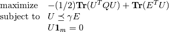
with variable 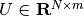 where  is
the number of training examples and
is
the number of training examples and  the number of
classes. The 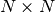 kernel matrix is given by
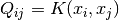 where
the number of
classes. The 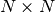 kernel matrix is given by
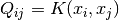 where  is a kernel function and
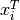 is the i’th row of the 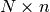 data matrix
is a kernel function and
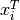 is the i’th row of the 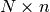 data matrix
 , and
, and  is an -vector with labels (i.e.
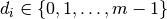).
is an -vector with labels (i.e.
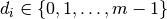).
Documentation
A custom solver for the multiclass support vector machine training problem is available as a Python module mcsvm. The module implements the following function:
- mcsvm(X, labels, gamma, kernel = 'linear', sigma = 1.0, degree = 1)¶
Solves the problem (1) using a custom KKT solver.
The input arguments are the data matrix
Valid kernel functions are:
- 'linear'
- the linear kernel: 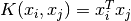
- 'poly'
- the polynomial kernel: 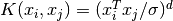
The kernel parameters and
Returns the function classifier(). If
is
then classifier(Y) returns a list with as its k’th element
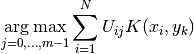
where 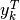 is row 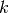 of
is the optimal solution of the QP (1).